BIOLOGICAL OBJECT
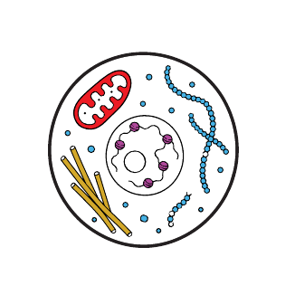
TIME-RESOLVED SPAD
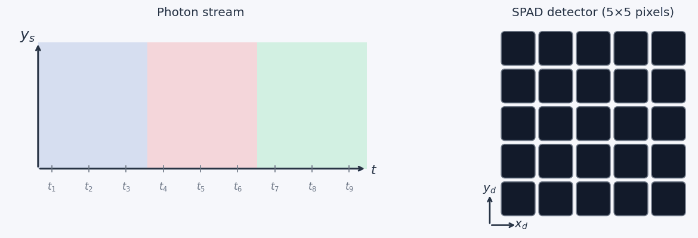
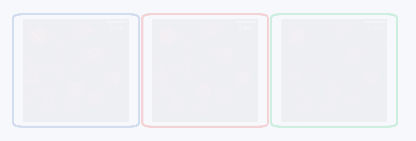
MORPHOLOGY-AGNOSTIC RECONSTRUCTION
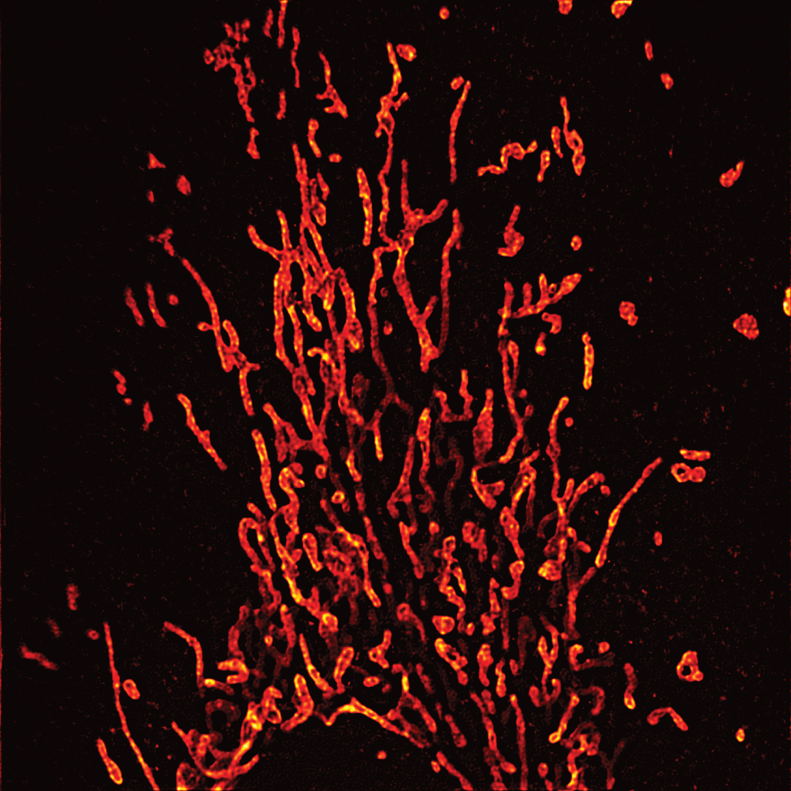
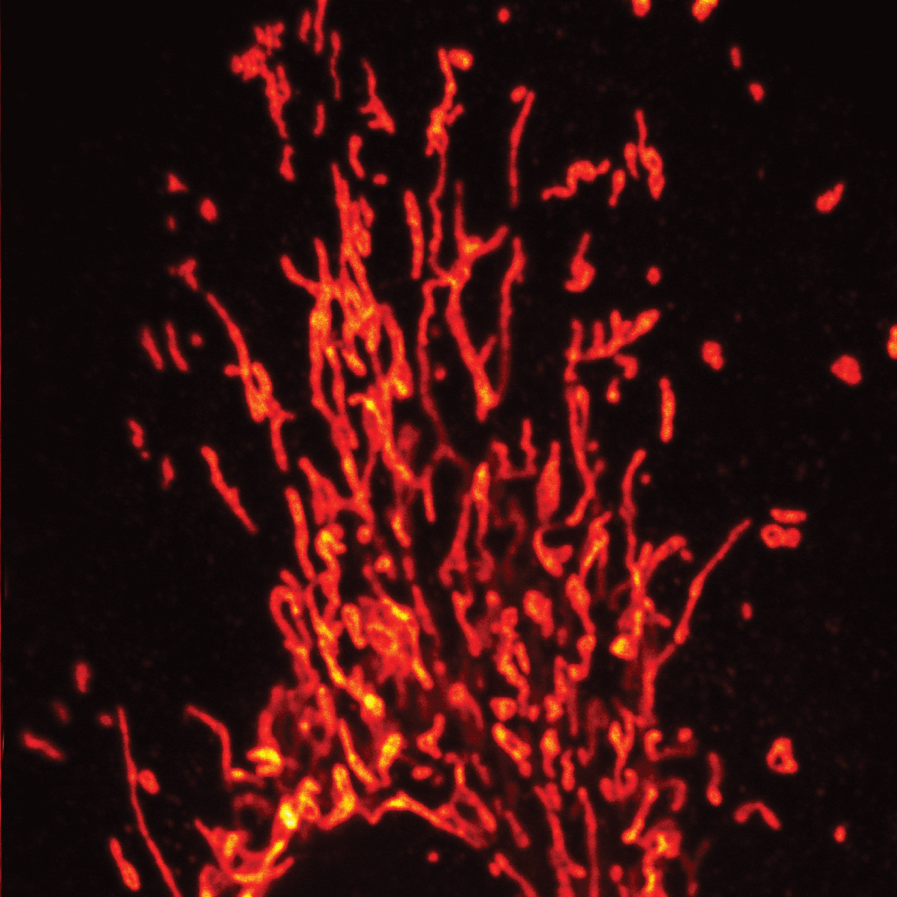
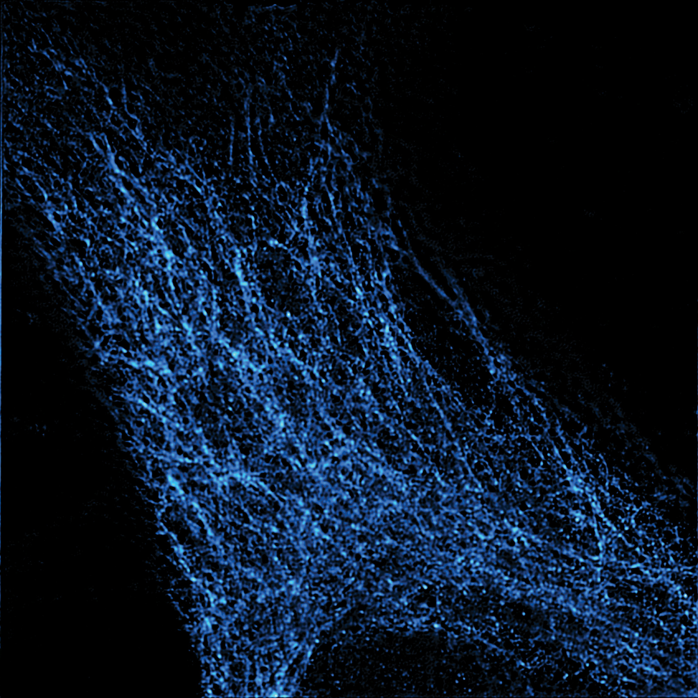
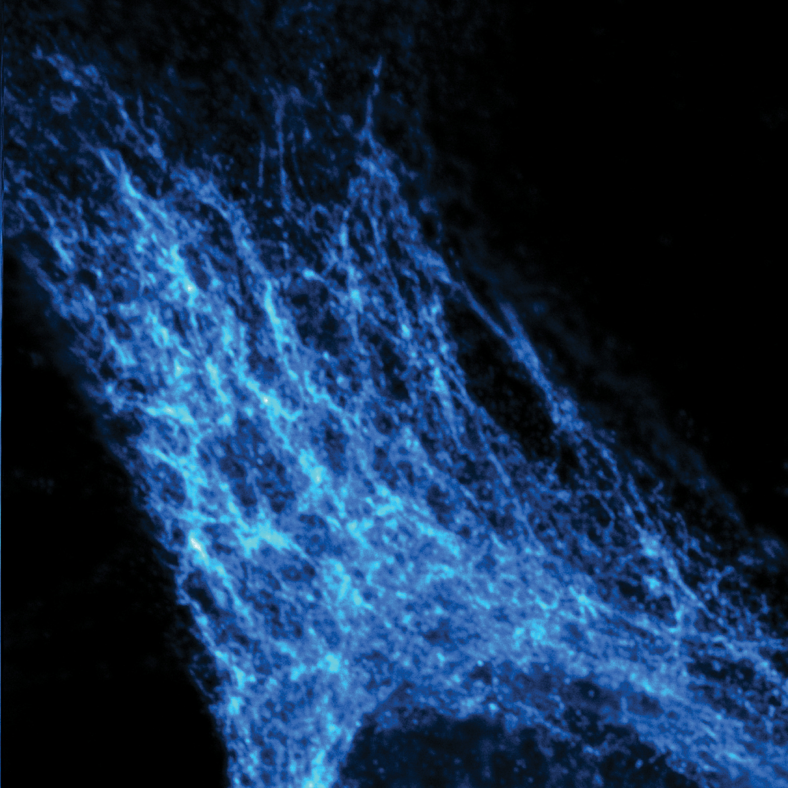
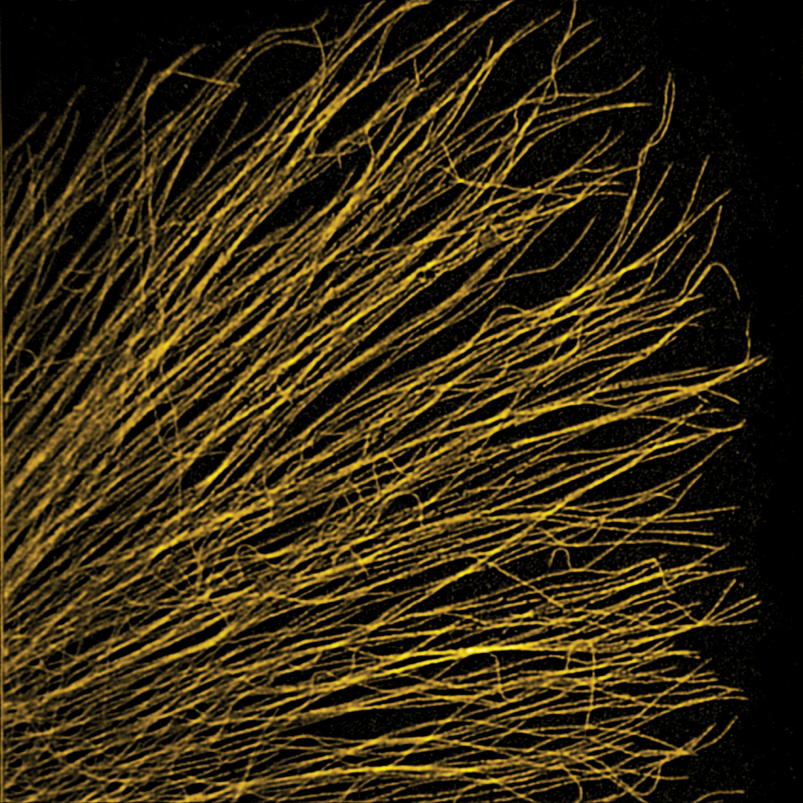
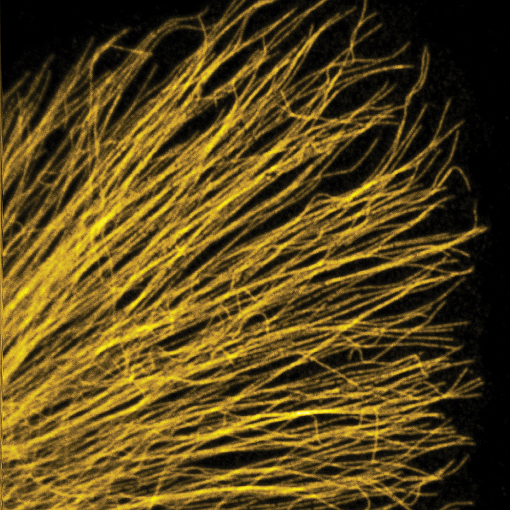
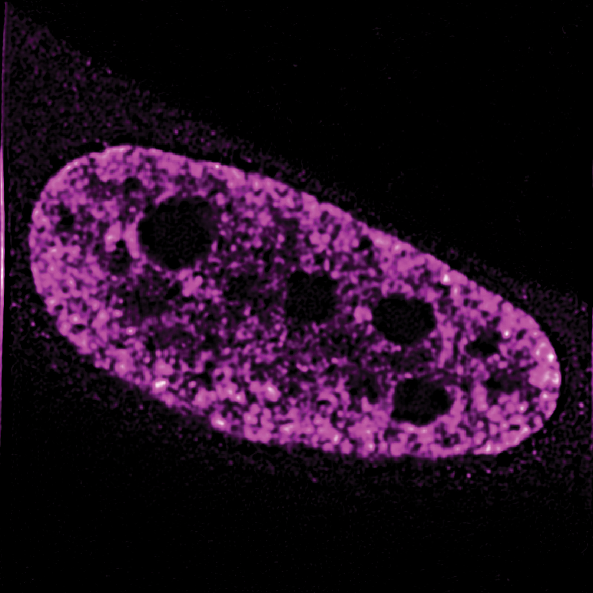
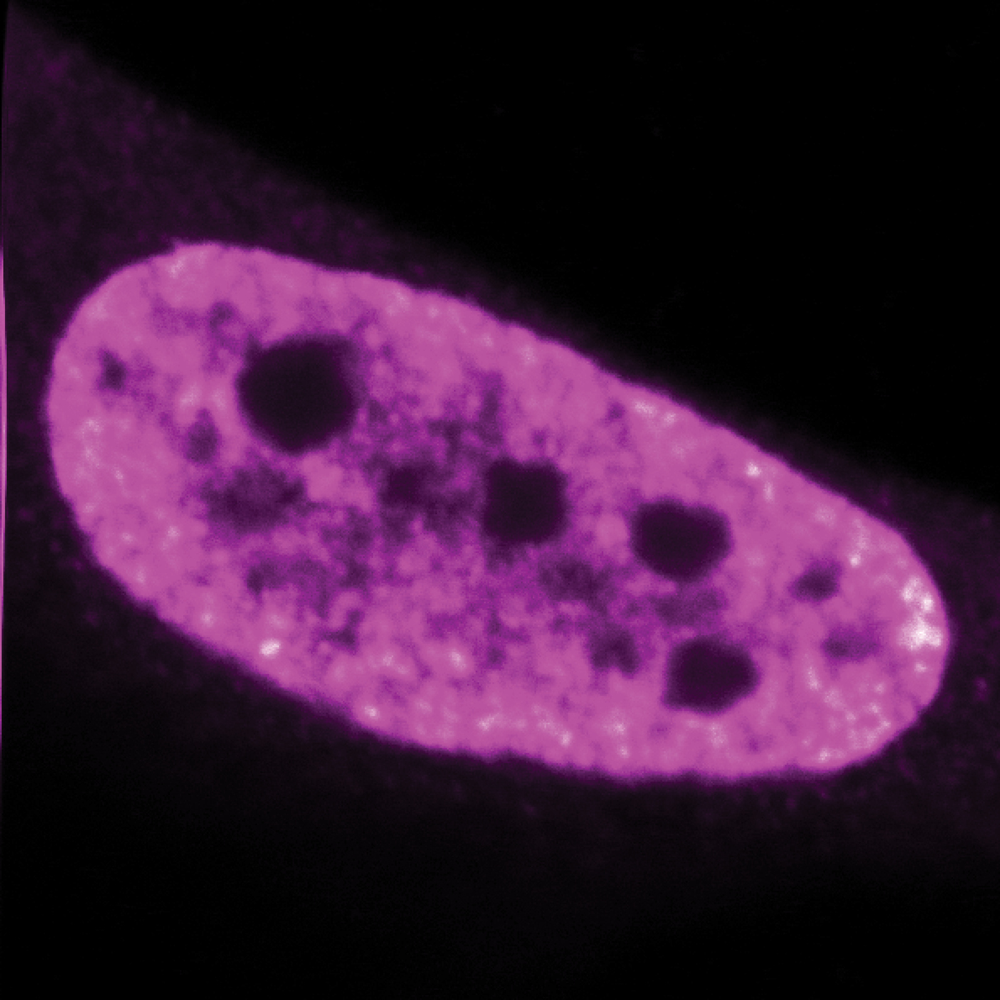
Can multiple noise realizations reveal information about the sample?
Time-resolved SPAD detection preserves the arrival time of individual photons. Partitioning the photon stream into disjoint temporal windows turns a single acquisition into multiple independent Poisson realizations of the same underlying object.
In Image Scanning Microscopy, the SPAD array produces a 5×5 set of detector images, each providing a blurred observation of the same specimen. These measurements must then be combined and deconvolved to recover a higher-resolution estimate of the underlying object rather than the optically blurred image formed by the microscope.
Richardson–Lucy (RL) is a natural reconstruction method for photon-counting data because it follows the physical forward model and Poisson statistics. Its iterations are, however, semi-convergent: after an initial improvement, prolonged optimization progressively fits the measurement noise. In practice, RL therefore requires either early stopping or an explicit prior on the unknown image.
Regularization by Noise replaces morphology-based priors with agreement across independent realizations: reproducible features are preserved, while realization-specific fluctuations are suppressed. The prior is therefore statistical rather than morphological, allowing the same regularization principle to be applied across very different biological structures. The resulting coupled variational problem also leads to a nontrivial optimization task, for which we are developing a dedicated algorithm with convergence guarantees.
Poisson inverse problems · morphology-agnostic regularization · variational modelling · numerical optimization · convergence analysis